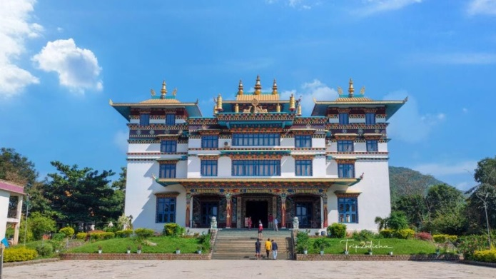
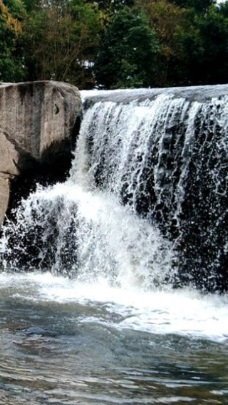
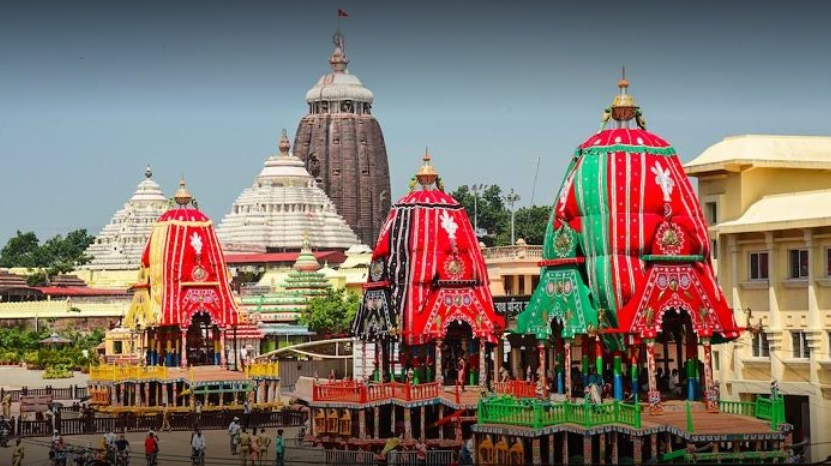
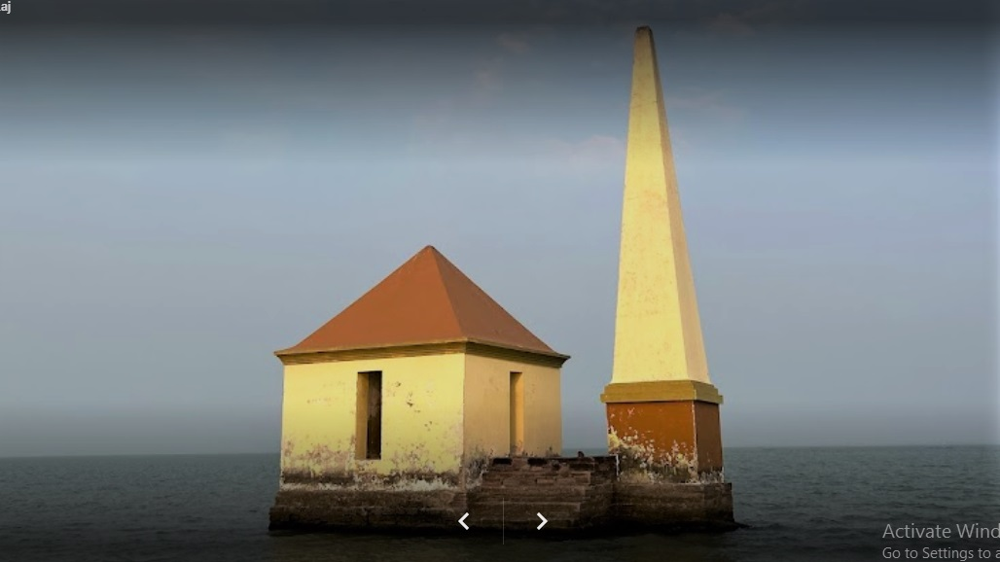
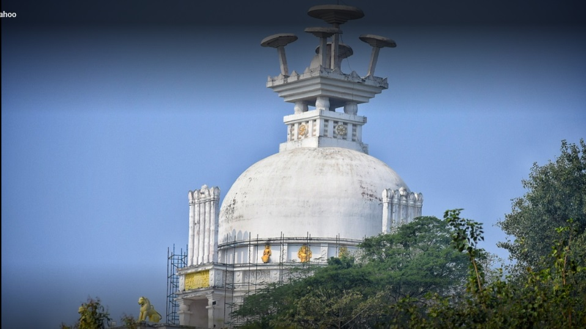
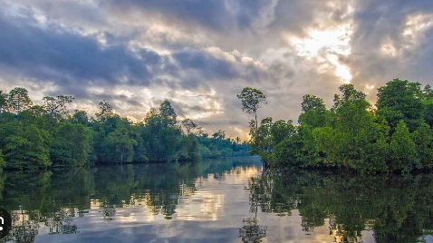
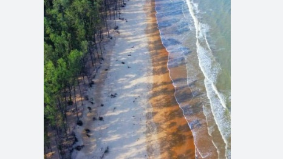

Let's know
Jirang

-
Jirang, also known as Chandragiri, is a Tibetan settlement in Odisha's Gajapati district, established in the 1960s. It features the Padmasambhava Monastery, the largest in Eastern India, inaugurated by the Dalai Lama in 2010. The village is surrounded by lush hills and offers a serene environment, making it a unique destination for cultural tourism and spiritual retreats. Known as "Phuntsokling," meaning "land of plenty and happiness," Jirang attracts visitors interested in Tibetan culture, Buddhism, and nature, complemented by nearby waterfalls and scenic landscapes.
Main attractions in Jirang
Jirang, also known as Chandragiri, offers several main attractions:
Padmasambhava Monastery: The largest monastery in Eastern India, inaugurated by the Dalai Lama in 2010. It serves as a residence and college for Buddhist monks, showcasing stunning Tibetan architecture.

Khasada Waterfall: Located about 5 km from the monastery, this picturesque waterfall is a popular picnic spot, surrounded by lush greenery and offering serene views.

Cultural Experiences: The village is home to Tibetan refugees, providing visitors with unique insights into Tibetan culture, seasonal fruits, and local handicrafts

>Puri

Puri, a coastal city in Odisha, India, is famous for its spiritual and cultural significance. Key highlights include:
Shree Jagannath Temple: A major pilgrimage site dedicated to Lord Jagannath, featuring stunning Kalinga architecture and the world's largest kitchen.
Puri Beach: Known for its golden sands and vibrant atmosphere, it offers various water sports and hosts the annual Puri Beach Festival.
Raghurajpur Artist Village: Renowned for Pattachitra art, this village showcases intricate paintings and local crafts.
Chilika Lake: A nearby sanctuary ideal for birdwatching and boat rides.
Puri is also famous for its annual Ratha Yatra, attracting thousands of devotees.
Unique architectural design of Jagannath Temple

The Jagannath Temple in Puri features several unique architectural elements:
Height and Structure: The temple rises to approximately 214 feet and is built on a ten-acre elevated platform, making it one of the tallest structures in the region.
Architectural Styles: It combines two styles—Rekha (curvilinear) for the Vimana (sanctum) and Pidha (pyramidal) for the Jagamohana (porch), showcasing Kalinga architecture.
Neelachakra: Atop the temple is the Neelachakra, an eight-spoked wheel made from Ashtadhatu, symbolizing Lord Vishnu.
Four Gates: The temple has four entrances, each adorned with intricate carvings, including the main gate, Singhdwara, featuring two lions.
These features highlight the temple's architectural grandeur and cultural significance.
>Chilika

Chilika Lake is the largest brackish water lagoon in Asia and the second largest coastal lagoon in the world, spanning over 1,100 square kilometers. Located along the eastern coast of India, it is bordered by the districts of Puri, Khurda, and Ganjam.
Key Features:
Biodiversity: Chilika is a hotspot for biodiversity, supporting over 400 vertebrate species, including migratory birds from as far as Siberia. It serves as a wintering ground for millions of waterfowl.
Ecological Importance: The lake's salinity varies significantly, creating diverse habitats that support both marine and freshwater species. It is home to endangered species like the Irrawaddy dolphin.
Cultural Significance: The lake is integral to local culture and economy, sustaining around 150,000 fisherfolk who rely on its rich fisheries.
Tourism: Popular activities include birdwatching, boating, and visiting nearby islands like Honeymoon Island and Nalaban Island, which is a designated bird sanctuary.
Chilika Lake was designated as a Ramsar site in 1981 due to its ecological significance.
>Dhauli

Dhauli, or Dhauligiri, is a significant hill located 8 km south of Bhubaneswar, Odisha, on the banks of the Daya River. It is renowned for the Dhauli Shanti Stupa, a peace pagoda built to commemorate Emperor Ashoka's conversion to Buddhism after the Kalinga War. This site features ancient rock edicts and serves as a center for Buddhist activities, reflecting Ashoka's commitment to peace and dharma. Visitors can explore various monuments, including chaityas and stupas, amidst serene landscapes.
History behind Kalinga war

The Kalinga War, fought around 261 BCE, was a pivotal conflict between the Mauryan Empire, led by Emperor Ashoka, and the independent kingdom of Kalinga, located in present-day Odisha. Kalinga was strategically important due to its control over trade routes with Southeast Asia and its strong military
Despite Ashoka's victory, the war resulted in immense casualties, with estimates of 100,000 killed and 150,000 deported. The brutality of the conflict profoundly affected Ashoka, leading him to renounce further military conquests and embrace Buddhism, promoting peace and dharma instead
Unique architectural design of dhauli
The Dhauli Shanti Stupa, also known as the Peace Pagoda, features a unique architectural design characterized by its dome shape and white exterior, symbolizing peace and non-violence. Constructed in 1972 by the Japan Buddha Sangha and Kalinga Nippon Buddha Sangha, it incorporates intricate stone panels depicting scenes from Buddha's life and Ashoka's transformation after the Kalinga War.
Notable elements include four niches with Buddha statues in various postures, and a rock-cut elephant, which is one of the oldest Buddhist sculptures in Odisha. The stupa's design emphasizes harmony, reflecting Ashoka's commitment to spreading Buddhism and peace.
>Bhitarkanika

Bhitarkanika is a unique ecosystem located in Odisha, India, known for being the second largest mangrove ecosystem in the country, covering an area of 672 km². It features a network of creeks and canals formed by the confluence of the Brahmani, Baitarani, and Dhamra rivers, creating a rich biodiversity hotspot.
The park is famous for its population of saltwater crocodiles, which are among the largest in India, and serves as a breeding ground for various species, including the endangered Olive Ridley sea turtles. Additionally, it hosts over 215 species of birds, including eight varieties of kingfishers, making it a prime location for birdwatching. The region's unique flora and fauna thrive in its brackish waters and tidal wetlands.
Unique species of birds can be found in Bhitarkanika
unique species of birds can be found in Bhitarkanika
Bhitarkanika is home to a remarkable diversity of bird species, with over 215 species recorded. Notable among them are:
Eight varieties of Kingfishers: These colorful birds are a highlight for birdwatchers.
Migratory birds: Species from Europe and Central Asia visit during winter, enriching the avian population.
Common species: Includes the Asian Openbill, Cormorants, Darters, Black Ibis, Egrets, and various storks and sea eagles.
The Bagagahana heronry near Surajpore Creek is particularly famous for its nesting colonies, showcasing impressive aerial displays during mating season.
Bagagahana Heronry a unique sight
The Bagagahana heronry is a unique sight due to its extensive nesting colonies of various bird species, particularly during the breeding season. Key features include:
Diverse Avian Population: It hosts numerous migratory and resident birds, including several species of herons and egrets, making it a vibrant ecosystem.
Nesting Behavior: The heronry showcases fascinating nesting behaviors, with birds often seen in large numbers, creating a lively spectacle.
Scenic Location: Set against the backdrop of lush mangroves and waterways, the heronry offers stunning views and an immersive nature experience.
This combination of biodiversity and picturesque scenery makes it a must-visit for birdwatchers and nature enthusiasts.
>Dublagadi

Dublagadi, located in Balasore, Odisha, is renowned for its Bagda Sea Beach, one of the cleanest beaches in the region. It offers a tranquil environment with pristine sands and gentle waves, ideal for relaxation and photography. The beach is surrounded by lush greenery and is close to the Bichitrapur Mangrove Forest, enhancing its natural beauty. Accommodations include eco-resorts and camps, catering to various budgets. Dublagadi is approximately 34 km from Balasore town and attracts many tourists seeking a peaceful getaway
Wildlife can be seen around Dublagadi Beach
At Dublagadi Beach, particularly near the Bichitrapur Mangrove Forest, you can expect to see a variety of wildlife. This area is home to numerous bird species, making it a great spot for birdwatching. Additionally, the beach is noted for its vibrant populations of red crabs and other marine life. Nearby, the Kuldiha Wildlife Sanctuary offers sightings of larger animals like elephants, deer, and various birds, enhancing the overall wildlife experience in the region